Actual host session · recorded live
COMMAND CODE × KUJO
OLLAMA GLM 5.3 → MCP → ABILITY GATEWAY → KUJO

Live Command Code
npm 0.1.0 · receipt verified
@kujolang/kujo-cmd · public package proof0.1.0 / Live
Kujo
×

kujolang.ai